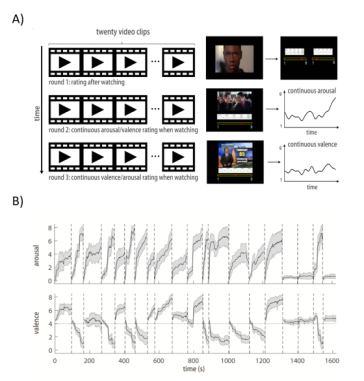
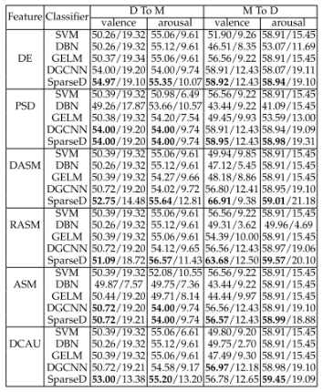

项目背景
1、项目摘要
本项目从脑电信息处理、情绪识别和自然人机交互三个角度综合研究基于非植入式脑机接口的情绪识别与交互技术。在基础理论层面，通过建立适用中国人群、 具有高生态效度的标准化情绪视频材料库和基于视频诱发情绪的生理数据库，探索针对不同情绪类别的综合多人脑电数 据时、空、频响应模式一致性的脑电神经表征模型，研究情绪对自然人机交互的影响；在关键技术层面，针对非植 入式脑机接口系统的共性特点，重点分析和挖掘复杂背景噪音下的有效脑电信号特征模式，提出具有高识别率的情绪 特征分类和机器学习方法；在应用验证层面，拟研究开环和闭环情景下的典型应用，包括基于脑机接口情绪识别的产 品体验评估和面向情绪调节与干预的人机交互，并进一步完善基于脑机接口的情绪识别与交互的理论和方法。本项目的研 究工作有望为人工智能的进一步发展和深度应用提供新的切入点，也将为自然人机交互研究提供理论依据和优化方法。
This proposal studies the noninvasive EEG-based brain-computer interface (BCI)and emotion-based natural human-computer interaction, from three aspects including EEG signal processing, emotion recognition and natural human-computer interaction. At the theoretic level, we study EEG-based neural representation model employing inter-subject correlation of joint temporal-spatial-spectral response pattern for different emotion types, and study the affection of different emotions to natural human-computer interaction. We will also establish standardized emotional video materials with high ecological validity for Chinese population and a physiological dataset of video-induced emotion. At the level of key techniques, aiming at the common characteristics of noninvasive BCI, we analyze the effective EEG features from complex background noise, and propose efficient emotion classification and machine learning methods. At the application level, we study two typical applications: one is open-loop and the other is closed-loop. The open-loop application is emotion-recognition-oriented product experience assessment, and the closed-loop application is human computer interaction for emotion regulation and intervention. The research work in this proposal can help the further development of artificial intelligence and provide the foundation and key techniques for natural human-computer interaction.
2、项目周期
2018.01-2021.12
3、研究内容
本项目的主要研究内容可以分为基础理论、关键技术和应用验证三个层次。在基础理论和模型研究层次，将重点研究和探索情绪的神经响应特性，提炼情绪信息的神经表征模型。在关键技术层次， 针对便携、实时、高精度的非植入式脑机接口系统的共性特点，将重点分析和挖掘复杂背景噪音下的有效 EEG 信号特征模式，提出相应的、具有高情绪识别率的特征分类和机器学习方法。 在应用验证层次， 面向开环情境， 构建用户体验过程中测量情感状态的敏感脑电指标，并对情绪状态进行实时分析与识别； 面向闭环情境， 构建面向情绪调节与干预的人机交互系统。
1)基础理论和模型研究
以中国电影为素材， 建立一个适用于中国社会和文化背景、标准化的情绪视频材料库。 针对以往情绪诱发材料库中正性材料单一的问题，尝试涵盖更多的正性情绪类型。 建立一个视频诱发情绪的生理指标数据库，并建立以脑电数据为主的情绪诱发生理数据库 ，可用于情绪特征的识别和建模。在脑电时-空-频响应模式基础上，采用视听刺激结合方式， 基于具有高生态效度的视频、音乐等典型情绪材料，深入研究情绪的神经响应特性，构建情 绪信息的神经表征模型。
2)关键技术研究
拟研究使用深度学习方法， 自动地从原始 EEG 数据中提取最具区分度的特征，从而避免人工设定或人工选取特征。深度学习方法通 常需要大量的训练数据样本。拟借鉴迁移学习的思想，将相近的、已解决的自然图像学 习问题迁移到EEG 信号特征深度学习模型上，利用已训练好的模型参数来帮助新模型训练数据集。在 进一步优化选取脑电时-空-频特征的同时，我们还将从多人脑电数据的一致性角度进 行多人联合分析并解释优化选取的脑电信号特征的生理意义。
3)应用验证研究
面向应用验证，拟分别建立开环和闭环情境下典型应用，对项目的研究成果进行实践验证，并进一步完善基于脑机接口的情绪识别与交互技术。 开环情境下的应用拟研究基于情绪识别的用户体验评估系统，闭环情境下的应用拟研究面向情绪调节与干预的人机交互系统。
本项目拟采用脑电信号测量与主观评价相结合的方法， 深入地了解用户在人机交互过程中的情感体验及内部认知加工机制，构建用户体验过程中测量认知和情感状态的敏感指标，并对情绪状态进行实时分析的识别。
情绪功能的异常是包括抑郁症在内的多种心理疾患所共有的关键特征之一。 本应用研究聚焦于社会普遍心理健康问题（如抑郁症、情绪障碍）的发生发展机制及识别指标和干预技术研究。 拟在情绪状态实时识别技术的基础上，确立抑郁和焦虑等心理疾患的关键情绪特征及其脑电测量指标，形成针对特定疾患的情绪识别模型，建立面向情绪调节与干预的计算机辅助觉察系统，辅助治疗者或受试者实时、准确地觉察患者或自身的情绪状态。
项目团队
刘永进教授
清华大学计算机信息与技术系媒体所所长
张丹副教授
清华大学社会科学学院心理学系副系主任
赵国朕
中国科学院社会与工程心理学研究室副研究员
| 名字 | 职称 | 学位 | 单位 | 项目分工 |
|---|---|---|---|---|
| 刘永进 | 教授 | 博士 | 清华大学 | 项目负责人 |
| 蔡莲红 | 教授 | 学士 | 清华大学 | 情绪的认知机理 |
| 孙向红 | 研究员 | 博士 | 中国科学院心理研究所 | 基于情绪识别的用户体验评估 |
| 黄河清 | 助理研究员 | 博士 | 中国通用技术研究院 | 基于情绪的用户体验评估和情绪调节与干预 |
| 张丹 | 副教授 | 博士 | 清华大学 | 情绪的神经响应特性和表征模型 |
| 葛燕 | 副研究员 | 博士 | 中国科学院心理研究所 | 情绪调节与干预的计算机辅助察觉系统 |
| 张亮 | 副研究员 | 博士 | 中国科学院心理研究所 | 情绪变化规律及其神经机制研究 |
| 赵国朕 | 副研究员 | 博士 | 中国科学院心理研究所 | 情绪材料库和生理指标数据库的标准化评定，EEG信号去噪和特征分析 |
| 王非 | 助理教授 | 博士 | 清华大学 | 情绪的神经与生理机理、EEG信号的特征模式分析 |
| 王运涛 | 助理研究员 | 博士 | 清华大学 | 自然人机交互，应用验证平台建设 |
总人数：37 高 级：6 中 级：2 博士后：1 博士生：9 硕士生：18
科普概念
1、脑机接口
脑机接口（Brain Computer Interface，BCI），有时也称作“大脑端口”direct neural interface或者“脑机融合感知”brain-machine interface，它是在人或动物脑（或者脑细胞的培养物）与外部设备间建立的直接连接通路。在单向脑机接口的情况下，计算机或者接受脑传来的命令，或者发送信号到脑（例如视频重建），但不能同时发送和接收信号。而双向脑机接口允许脑和外部设备间的双向信息交换。
2、脑机接口四部件
脑机接口主要由信号采集、信号处理、控制设备、结果反馈四部件构成。
3、脑机接口设备种类
1)侵入式
此类脑机接口通常直接植入到大脑的灰质，因而所获取的神经信号的质量 比较高。但缺点是容易引发免疫反应和愈伤组织（疤）， 进而导致信号质量的衰退设置消失。
2)部分侵入式
部分侵入式脑机接口一般植入到颅腔内，但是位于灰质外。其空间分辨率不如侵入式脑机接口，但是优于非侵入式。其另一优点是引发 免疫反应和愈伤组织的几率较小。
3)非侵入式
非侵入式脑机接口是可以让人穿戴的设备，这样就避免了昂贵和危险的手术，虽然这种非侵入式的装置方便佩戴于人体，但是由于颅骨对信号的 衰减作用和对神经元发出电磁波的分散和模糊效应， 记录到信号的分辨率并不高。
4、脑机接口简史
1) 1924德国精神病学家Hans Berger发现了神经电的活动并记录了脑电图。这个纪录设备就是我们所称的EEG
2) 1970美国国防高级研究计划局（DARPA）开始探索脑机接口的潜力
3) 1998第一个大脑植入接口产生高质量的信号
4) 2005科学家成功的让猴子利用大脑控制了机械手臂
5) 2014通过网络传输脑电信号实现直接的脑对脑交流
5、情绪与情绪识别
情绪是综合了人的感觉、思想和行为的一种状态，在人与人的交流中发挥着重要作用。情绪是一种综合了人的感觉、思想和行为的状态，它包括人对外界或自身刺激的心理反应， 包括伴随这种心理反应的生理反应。在人们的日常工作和生活中，情绪的作用无处不在。在医疗护理中，如果能够知道患者、特别是有表达障碍的患者的情绪状态，就可以根据患者的情绪做出不同的护理措施，提高护理 量。在产品开发过程中，如果能够识别出用户使用产品过程中的情绪状态，了解用户体验，就可以改善产品功能，设计出更适合用户需求的产品。在各种人-机交互系统里 ，如果系统能识别出人的情绪状态，人与机器的交互就会变得更加友好和自然。因此，对情绪进行分析和识别是神经科学、心理学、认知科学、计算机科学和人工智能等领域的一项重要的交叉学科研究课题。
情绪是与特定生理活动模式有关的经历。从人类的行为信号或生理信号中识别情绪在情感计算和人机交互中起着重要的作用。与行为信号（例如面部表情、语音语调，手势姿 势）相比，生理信号是自发、难以伪装的，因此，它们为情绪识别提供了更加直接和丰富的信息。人体可产生诸如脑电（EEG）、心电（ECG）、肌电（EMG）和皮肤电阻抗（GSR）等各类生理信号。
情绪诱发是情绪识别研究中的重要一环。常用的情绪诱发方法包括自我诱发（如回忆）、情景诱发（如玩游戏）和事件诱发。其中以事件诱发的研究最多，即 通过图片、声音、视频或任何可以唤起情绪的材料来诱发被试的情绪。
研究情绪识别时，研究者通常采用两种视角来建构和理解情绪空间：即离散模型和维度模型。维度模型（The Dimensional Model）认为情绪空间可以由二维的效价-唤醒度（Valence-Arousal, VA）或是三维的愉悦度-唤醒度-优势度（Pleasure-Arousal-Dominance, PAD）的坐标体系进行表达。离散模型（The Discrete Model）认为情绪空间由数量有限的离散的基本情绪构成。以“离散”视角建立的情绪模型，其提炼出的基本情绪具有较好的普遍辨识性和自然属性，在神经系统层面也表现出了相对特异的反应模式。从操作层面分析，当维度模型所要识别的情绪在效价和唤醒度上相近时，该方法对情绪的区分效力会相应下降，而离散模型的表现更好
在情绪识别领域，对于情绪的分类可以通过情绪量化模型来定义，被广泛使用的情绪模型包括离散模型和连续模型。在离散模型中，情感空间由一些基本情绪来描述，复杂情感由几种确定的基本情绪组合而成。使用较多的是Ekman的情绪模型，该模型包括六种基本情绪类别：高兴（happiness）、悲伤（sadness）、惊讶（surprise）、恐惧（fear）愤怒（anger）和厌恶（disgust）。在维度模型中，情感空间可以由二维的效价-唤醒度（Valence-Arousal, VA）或者是三维的愉悦度-唤醒度-优势度（Pleasure-Arousal-Dominance, PAD）在连续的坐标空间进行表示。
6、脑电波
脑电波（Electroencephalogram,EEG）是一种使用电生理指标记录大脑活动的方法，大脑在活动时，大量神经元同步发生的突触后电位经总和后形成的。它记录大脑活动时的电波变化，是脑神经细胞的电生理活动在大脑皮层或头皮表面的总体反映。
脑电波来源于锥体细胞顶端树突的突触后电位。脑电波同步节律的形成还与皮层丘脑非特异性投射系统的活动有关。脑电波是脑科学的基础理论研究，脑电波监测广泛运用于其临床实践应用中。
7、脑电波研究历史
早在1857年，英国的一位青年生理科学工作者卡通（R.Caton）在兔脑和猴脑上记录到了脑电活动，并发表了“脑灰质电现象的研究”论文，但当时并没有引起重视。十五年后，贝克（A.Beck）再一次发表脑电波的论文，才掀起研究脑电现象的热潮，直至1924年德国的精神病学家贝格尔（H.Berger）看到电鳗发出电气，认为人类身上必然有相同的现象，才真正地记录到了人脑的脑电波，从此诞生了人的脑电图。
8、人机交互技术
人机交互技术（Human-Computer Interaction Techniques）是指通过计算机输入、输出设备，以有效的方式实现人与计算机对话的技术。人机交互技术包括机器通过输出或显示设备给人提供大量有关信息及提示请示等，人通过输入设备给机器输入有关信息，回答问题及提示请示等。人机交互技术是计算机用户界面设计中的重要内容之一。
研究成果
专利
- 驾驶员距离估计与控制能力评估方法和系统。
瞿炜娜、葛燕、杜峰、张侃、孙向红。发明专利,申请号：201910728049.1，申请时间：2019年8月8日 - 一种基于运动起始诱发电位的脑机接口方法。
张丹, 陈菁菁。发明专利, 授权号：ZL201810096184.4, 申请时间：2018年1月31日，授权时间：2020年6月9日 - 基于脑电信号的创造力人格特质测量方法及装置。
张丹, 王非, 胡鑫, 陈菁菁。发明专利, 授权号：ZL201910870979.0, 申请时间：2019年9月16日，授权时间：2020年8月25日 - 眼动交互方法、头戴式设备和计算机可读介质。
易鑫, 史元春, 鲁逸沁, 王运涛。发明专利，申请号：202010557932.1，申请时间：2020年6月18日 - 一种基于换脸技术及虚拟现实技术模拟演讲的方法和装置。
王运涛, 瑞图, 史元春。发明专利，申请号：202010368937X，申请时间：2020年5月3日 - 一种基于神经响应的人格测量方法及系统。
陈菁菁, 胡鑫, 王非, 张丹。 发明专利, 授权号：ZL201811276895.6, 申请时间：2018年10月30日，授权时间：2021年3月2日 - 一种情绪识别方法、电子设备及存储介质。
刘永进、舒叶芷。技术发明专利，申请号：202110256917.8，申请时间：2021年3月9日 - 一种基于图形配对任务的群体关系质量评估与干预方法及系统。
闫海江，赵国朕，张侃。发明专利，申请号：202110525656.5，申请时间：2021年5月14日。 - 一种基于go/no-go测试任务的群体人际间关系质量评估与干预方法及系统。
余凯，赵国朕，张侃。发明专利，申请号：202110525789.2，申请时间：2021年5月14日 - 虚拟形象视频合成方法及设备。
刘永进; 温玉辉。技术发明专利，申请号：2021114068118，申请时间：2021年11月24日
论文
- Zhao, G., Zhang Y., Ge, Y. (2018). Frontal EEG Asymmetry and Middle Line Power Difference in Discrete Emotions. Frontiers in Behavioral Neuroscience, 12(225). doi:10.3389/fnbeh.2018.00225. 第二标注 2018.3.29
- Ge, Y., Zhao, G., Zhang, Y., Houston, R. J., & Song, J. (2018). A standardised database of Chinese emotional film clips. Cognition & Emotion, 1-15. doi:10.1080/02699931.2018.1530197.第二标注 2018.4.19
- Wang, Y., Qu, W., Ge, Y., Sun, X., Zhang, K., & Zajenkowski, M. (2018). Effect of personality traits on driving style: psychometric adaption of the multidimensional driving style inventory in a chinese sample. PLOS ONE, 13(9): e0202126. doi:10.1371/journal.pone.0202126. 第二标注 2018.1.2
- 张丹, 陈菁菁, 王毅军. 2017年脑机接口研发热点回眸. 科技导报, 2018, 36(1): 104-109. （核心期刊，第二标注）
- Han, W., Zhang, M., Feng, X., Gong, G., Peng, K., & Zhang, D. (2018). Genetic influences on creativity: an exploration of convergent and divergent thinking. PeerJ, 6(3), e5403–18.
- (SCI IF = 2.118, JCR Q2，第三标注)"
- Chen, J., Li, Z., Hong, B., Maye, A., Engel, A., & Zhang, D.* (2018). A Single-stimulus, Multi-target BCI Based on Retinotopic Mapping of Motion-Onset VEPs. IEEE Transactions on Bio-Medical Engineering, Vol. 66, No. 2, pp. 464-470, 2019. http://doi.org/10.1109/TBME.2018.2849102 (SCI索引，影响因子4.288，第二标注)
- Yan Ge, Guozhen Zhao, Yulin Zhang, Rebecca J. Houston & Jinjing Song. (2018). A standardised database of Chinese emotional film clips. Cognition & Emotion, 1-15. 第二标注
- Wei Han, Mi Zhang, Xue Feng, Guihua Gong, Kaiping Peng, Dan Zhang (2018). Genetic influences on creativity: an exploration of convergent and divergent thinking. PeerJ, 6(3), e5403–18. (SCI索引，影响因子2.118，第三标注)
- Guozhen Zhao, Yulin Zhang, Yan Ge, Yan Zheng, Xianghong Sun, Kan Zhang. (2018). Asymmetric hemisphere activation in tenderness: evidence from eeg signals. Scientific Reports, 8(1), article no. 8029. 第二标注
- Guozhen Zhao, Yulin Zhang and Yan Ge. (2018). Frontal EEG Asymmetry and Middle Line Power Difference in Discrete Emotions. Front. Behav. Neurosci., 12(225). 第二标注
- Zizheng Guo, Ruiya Chen, Xian Liu, Guozhen Zhao, Yan Zheng, Mingliang Gong, Jun Zhang. (2018). The impairing effects of mental fatigue on response inhibition: an erp study. PLOS ONE, 13(6), e0198206-. 第二标注
- Biying Shen, Yan Ge, Weina Qu, Xianghong Sun, Kan Zhang. (2018). The different effects of personality on prosocial and aggressive driving behaviour in a chinese sample. Transportation Research Part F: Traffic Psychology and Behaviour, 56, 268-279. 第四标注
- Yuchen Wang, Weina Qu, Yan Ge, Xianghong Sun, Kan Zhang (2018). Effect of personality traits on driving style: psychometric adaption of the multidimensional driving style inventory in a chinese sample. PLOS ONE, 13(9), 0202126. 第二标注
- Jing Xu, Juan Liu, Xianghong Sun, Kan Zhang, Weina Qu, Yan Ge. (2018). The relationship between driving skill and driving behavior: psychometric adaptation of the driver skill inventory in China. Accident Analysis & Prevention, 120, 92-100. 第四标注
- Yiheng Han, Bingjun Li, Yu-Kun Lai and Yong-Jin Liu. CFD: A Collaborative Feature Difference Method for Spontaneous Micro-Expression Spotting. IEEE International Conference on Image Processing (ICIP ’18), pp.1942-1946, 2018. （第一标注）
- Yang Chen, Yu-Kun Lai, Yong-Jin Liu#. CartoonGAN: Generative Adversarial Networks for Photo Cartoonization. In IEEE Conference on Computer Vision and Pattern Recognition (CVPR 18), pages 9465-9474, 2018.（第三标注）
- Ran Yi, Yong-Jin Liu, Yu-Kun Lai. Content-Sensitive Supervoxels via Uniform Tessellations on Video Manifolds. In IEEE Conference on Computer Vision and Pattern Recognition (CVPR 18), pages 646-655, 2018.（第三标注）
- Guozhen Zhao, Yong-Jin Liu#, Yuanchun Shi. Real-Time Assessment of Cross-Task Mental Workload using Physiological Measures during Anomaly Detection. IEEE Transactions on Human-Machine Systems, Vol. 48, No. 2, pp. 149-160, 2018. (第三标注)
- Minjing Yu, Yong-Jin Liu, Guozhen Zhao, Chun Yu, Yuanchun Shi. Spatial Ability Improvement by Tangible Interaction: A Case Study with EasySRRobot. Extended Abstracts of the 2018 CHI Conference on Human Factors in Computing Systems (CHI EA '18), Paper No. LBW013.（第二标注）
- Zhang, H., Yao, Z., Lin, L., Sun, X., Shi, X., Zhang, L. (2019). Early life stress predicts cortisol response to psychosocial stress in healthy young adults. PsyCh Journal, 8(3), 353-362. doi:10.1002/pchj.278. 第二标注 2018.8.9
- Qu, W., Xu, J., Ge, Y., Sun, X., & Zhang, K. (2019). Development and validation of a questionnaire to assess public receptivity toward autonomous vehicles and its relation with the traffic safety climate in China. Accident analysis and prevention, 128, 78-86. doi:10.1016/j.aap.2019.04.006 第四标注 2018.11.23
- Zhang, Q., Ge, Y., Qu, W., Hennessy, D. A., & Zhang, K. (2019). Effects of anger and collision history on driver space preference. Transportation Research Part F-Traffic Psychology and Behaviour, 63, 108-117. doi:10.1016/j.trf.2019.04.002. 第四标注 2018.6.4
- Hu, X., Chen, J., Wang, F., & Zhang, D.* (2019). Ten Challenges for EEG-based Affective Computing. Brain Science Advances, 5(1): 1–20. （第一标注）
- Chen, J., Maye, A., Engel, A. K., Wang, Y., Gao, X., & Zhang, D.* (2019). Simultaneous Decoding of Eccentricity and Direction Information for a Single-Flicker SSVEP BCI. Electronics, 8(12), 1554. (SCI IF = 1.764, JCR Q3，第四标注
- Han, W., Feng, X., Zhang, M., Peng, K., & Zhang, D. (2019). Mood States and Everyday Creativity: Employing an Experience Sampling Method and a Day Reconstruction Method. Frontiers in Psychology, 10, 95. (SCI IF = 2.129, JCR Q2，第三标注)
- Chen, J., Hong, B., Wang, Y., Gao, X., & Zhang, D.* (2019). Towards a fully spatially coded
- brain-computer interface: simultaneous decoding of visual eccentricity and direction. Proceedings of IEEE EMBC 2019, 3091–3094. (EI，第一标注)
- Chen, J.#, Li, Z.#, Hong, B., Maye, A., Engel, A. K., & Zhang, D.* (2019). A Single-Stimulus, Multitarget BCI Based on Retinotopic Mapping of Motion-Onset VEPs. IEEE Transactions on Biomedical Engineering, 66(2), 464–470. (SCI IF = 4.491, JCR Q1，第二标注)
- 陈小刚, 王毅军, 张丹. 2018年脑机接口研发热点回眸. 科技导报, 2019, 37(1): 173-179.
- （核心期刊，第四标注）
- Hu, X., Zhuang, C., Wang, F., Liu, Y.-J., Im, C. H., & Zhang, D.* (2019). fNIRS Evidence for Recognizably Different Positive Emotions. Frontiers in Human Neuroscience, 13, 120. (SCI IF = 2.870, JCR Q2，第三标注)
- Zheng, Y., Zhang, D., Wang, L., Wang, Y., Deng, H., Zhang, S., Li, D.*, Wang, D.* (2019).
- Resting-state based spatial filtering for an fNIRS-based motor imagery brain-computer interface.
- IEEE Access, 7, 120603-120615. (SCI IF = 3.745, JCR Q1，第二标注)
- 张冠华, 余旻婧, 陈果, 韩义恒, 张丹, 赵国朕, 刘永进. 面向情绪识别的脑电特征研究综述. 中国科学: 信息科学, 第49卷，第9期，1097-1118页，2019（第一标注）
- Kaiyun Li, Yan Bi, Yifan Wang, Mingxian Zhang, Yong-Jin Liu, Huijing Yang, Fengxun Lin.
- The Disentangled Sub-processes Involved in Implied Motion Contributing to Food Freshness:
- the Neural Evidence from ERPs. Advances in Cognitive Psychology, Volume 15, Issue 3, pp. 185-198 (2019)（第二标注）
- Xin Hu, Chu Zhuang, Fei Wang, Yong-Jin Liu, Chang-Hwan Im, Dan Zhang. fNIRS Evidence for the Differentiation of Positive Emotions. Frontiers in Human Neuroscience, Vol. 13, Article No. 120, 2019（第三标注）
- Zipeng Ye, Yong-Jin Liu, Jianmin Zheng, Kai Hormann, Ying He. DE-Path: A Differential-Evolution-Based Method for Computing Energy-Minimizing Paths on Surfaces. Computer-Aided Design. Volume 114, September 2019, Pages 73-81（第二标注）
- Qian Fu, Ying He, Fei Hou, Juyong Zhang, Anxiang Zeng, Yong-Jin Liu. Vectorization Based Color Transfer for Portrait Images. Computer-Aided Design. Volume 115, October 2019, Pages 111-121.（第四标注）
- Zhang, Q., Qu, W., Ge, Y., Sun, X., & Zhang, K. (2020). The effect of the emotional state on driving performance in a simulated car-following task. Transportation Research Part F: Traffic Psychology and Behaviour, 69, 349-361. doi:10.1016/j.trf.2020.02.004. 第一标注 2019.6.19
- Qu, W., Zhang, W., & Ge, Y. (2020). The moderating effect of delay discounting between sensation seeking and risky driving behavior. Safety Science, 123, 104558. doi:10.1016/j.ssci.2019.104558. 第三标注 2019.2.26
- Du, X., Ma, C., Zhang, G., Li, J., Lai, Y.-K., Zhao, G., … Wang, H. (2020). An Efficient LSTM Network for Emotion Recognition from Multichannel EEG Signals. IEEE Transactions on Affective Computing, 1–1. doi:10.1109/taffc.2020.3013711. 第二标注 2019.11.4
- Ge, Y., Qu, W., Zhou, M., Özkan, T., Bıçaksız, P., & Zhang, K. (2020). Psychometric adaption of the impulsive driver behavior scale in a Chinese sample. Transportation Research Part F: Traffic Psychology and Behaviour, 68, 218-230. doi.org/10.1016/j.trf.2019.11.004. 第四标注 2018.9.28
- Lin, L., Zhang, J., Zhang, L., Cao, J., Wang, J., Luo, X., & Wang, Y. (2020). Motive Structure Underlying the Use of Intelligent Connected Vehicles. In Extended Abstracts of the 2020 CHI Conference (CHI EA ’20). 第四标注 2020.2
- Lin, L., Wu, J., Yuan, Y., Sun, X., & Zhang, L. (2020). Working Memory PredictsHypothalamus-Pituitary-Adrenal Axis Response to Psychosocial Stress in Males.
- Frontiers in Psychiatry, 11(142). doi:10.3389/fpsyt.2020.00142. 第四标注 2019.12.26
- Lin, L., Zhang, J., Wang, P., Bai, X., Sun, X., & Zhang, L. (2020). Perceived Control Moderates the Impact of Academic Stress on the Attention Process of Working Memory in Male College Students. Stress, 23(3), 256-264. doi:10.1080/10253890.2019.1669557. 第一标注 2019.3.27
- Ge, Y., Sheng, B., Qu, W., Xiong, Y., Sun, X., & Zhang, K. (2020). Differences in visual-spatial working memory and driving behavior between morning-type and evening-type drivers. Accident Analysis & Prevention, 136, 105402. doi:10.1016/j.aap.2019.105402. 第四标注 2019.4.14-2019.12.10
- Zhao, G., Zhang, Y., Zhang, G., Zhang, D., & Liu, Y.-J. (2020). Multi-target Positive Emotion Recognition from EEG Signals. IEEE Transactions on Affective Computing,
- doi:10.1109/TAFFC.2020.3043135. 第三标注 2019.9.2 1-1. 1-2.
- 1-3.Li, W., Hu, X., Long, X., Tang, L., Chen, J., Wang, F. & Zhang, D.* (2020). EEG responses to emotional videos can quantitatively predict big-five personality traits. Neurocomputing, 415: 368-381. (SCI IF = 4.438, JCR Q1，第一标注)
- Zhang, M., Wang, F., & Zhang, D.* (2020). Individual differences in trait creativity moderate the state-level mood-creativity relationship. PLoS ONE, 15(8), e0236987. (SCI IF = 2.740, JCR Q2，第二标注)
- Li, W., Wu, C., Hu, X., Chen, J., Fu, S., Wang, F. & Zhang, D. (2020). Quantitative Personality Predictions from a Brief EEG Recording. IEEE Transactions on Affective Computing, DOI: 10.1109/TAFFC.2020.3008775. (SCI IF = 7.512, JCR Q1，第二标注)
- Shen, X., Hu, X., Liu, S., Song, S., Zhang, D.* (2020). Exploring EEG Microstates for Affective
- Computing: Decoding Valence and Arousal Experiences During Video Watching. Proceedings of IEEE EMBC 2020, 841-846. (EI，第一标注)
- Qu, Z., Chen, J., Li, B., Tan, J., Zhang, D., & Zhang, Y. (2020). Measurement of High-School Students’ Trait Math Anxiety Using Neurophysiological Recordings During Math Exam. IEEE Access, 8, 57460–57471. (SCI IF = 3.745, JCR Q1，第三标注)
- Xiaobing Du, Cuixia Ma, Guanhua Zhang, Jinyao Li, Yu-Kun Lai, Guozhen Zhao, Xiaoming Deng, Yong-Jin Liu, Hongan Wang. An Efficient LSTM Network for Emotion Recognition from Multichannel EEG Signals," DOI (identifier) 10.1109/TAFFC.2020.3013711, IEEE Transactions on Affective Computing. 第二标注
- Minjing Yu, Yong-Jin Liu, Yulin Zhang, Guozhen Zhao, Chun Yu, Yuanchun Shi. Interactions with Reconfigurable Modular Robots Enhance Spatial Reasoning Performance. IEEE Transactions on Cognitive and Developmental Systems. Vol. 12, No. 2, pp. 300-310, 2020（第一标注）
- Yong-Jin Liu, Yiheng Han, Zipeng Ye, Yu-Ku Lai. Ranking-Preserving Cross-Source Learning for Image Retargeting Quality Assessment. IEEE Transactions on Pattern Analysis and Machine Intelligence. Vol. 42, No. 7, pp. 1798-1805, 2020（第三标注）
- Ge, Y., Liu, X., Chai, J., & Qu, W. (2021). Negativity bias towards anger in dangerous drivers: Empirical evidence from ERPs. Neuroscience Letters, 740 (2), 135442-135442. doi:10.1016/j.neulet.2020.135442. 第四标注 2020.7.13
- Zhang, Y., Dong, K., & Zhao, G. (2021). The mediating role of social connectedness in the effect of positive personality, alexithymia and emotional granularity on life satisfaction: Analysis based on a structural equation model. Personality and Individual Differences, 171, 110473. doi:10.1016/j.paid.2020.110473. 第一标注2020.5.19
- Zhang, Y., Zhao, G., Ge, Y., Shu, Y., Zhang, D., ...&Sun, X. (2021). CPED: A Chinese Positive Emotion Database for Emotion Elicitation and Analysis. IEEE Transactions on Affective Computing, 1-1. doi:10.1109/taffc.2021.3088523. 第三标注 2019.11.12
- Zhang, G., Yu, M., Liu, Y.-J., Zhao, G., Zhang, D., & Zheng, W. (2021). SparseDGCNN: Recognizing Emotion from Multichannel EEG Signals. IEEE Transactions on Affective Computing, 1-1. doi:10.1109/taffc.2021.3051332. 第一标注 2018.9.9
- Chen, J., Zhang, Y., &Zhao, G. (2021). The Qingdao Preschooler Facial Expression Set: Acquisition and Validation of Chinese Children's Facial Emotion Stimuli. Frontiers in Psychology, 11, 1-13. doi.org/10.3389/fpsyg.2020.554821. 第二标注 2020.4.23
- Lin L., Pang X., Zhang J., Sun X., Zhang L. (2021). System Performance and Empathetic Design Enhance User Experience for Fault Diagnosis Expert System. 23rd HCI International Conference, HCII 2021. 第二标注 2020.10
- Ge, Y., He, S., Xu, Y., & Qu, W. (2021). Effects of dietary patterns on driving behaviours among professional truck drivers: the mediating effect of fatigue. Occupational and Environmental Medicine, 78, 669-675. 第六标注
- Ge, Y., Liu, X., Shen, B., & Qu, W. (2021). Can prosocial attitude reduce the risk behavior in simulated driving? Transportation Research Part F: Traffic Psychology and Behaviour, 79, 84-93. doi:10.1016/j.trf.2021.04.003. 第二标注 2020.9.14
- Ge, Y., Liu, X., Shen, B., & Qu, W. (2021). Does a prosocial attitude reduce risky driving behaviour under time pressure? Transportation Research Part F: Traffic Psychology and Behaviour, 84, 1-8. doi.org/10.1016/j.trf.2021.11.018. 第六标注 2021.6.21
- Ge, Y., Wang, Y., Xiong, Y., & Qu, W. (2021). Does visual search mediate the effect of chronotype on driving behaviour: Evidence from simulated driving. Applied Ergonomics, 92, 103313. doi:10.1016/j.apergo.2020.103313. 第五标注 2020.3.26
- Shui, X., Zhang, M., Li, Z., Hu, X., Wang, F., Zhang, D.* (2021). A dataset of daily ambulatory psychological and physiological recording for emotion research. Scientific Data, 8:161, DOI: 10.1038/s41597-021-00945-4. (SCI IF = 6.444, JCR Q1，第二标注)
- Liu, H., Zhao, C., Wang, F.* & Zhang, D.* (2021). Inter-brain amplitude correlation differentiates cooperation from competition in a motion-sensing sports game. Social Cognitive and Affective Neuroscience, 16(6): 552-564. (SCI IF = 3.436, JCR Q2，第二标注)
- Liu, J., Shen, X., Song, S., Zhang, D.* (2021). Domain Adaptation for Cross-Subject Emotion Recognition by Subject Clustering. Proceedings of IEEE NER 2021, 904-908. (EI，第一标注)
- 沈新科，李奕超，刘锦，宋森，张丹*. 基于脑电功能连接微状态的情绪状态解码. 智能科学与技术学报, 2021, 3(1):49-58. （第一标注）
- Ding, Y.#, Hu, X.#, Xia, Z., Liu, Y.-J., & Zhang, D.* (2021). Inter-brain EEG Feature Extraction
- and Analysis for Continuous Implicit Emotion Tagging during Video Watching. IEEE Transactions on Affective Computing, 12(1): 92-102. (SCI IF = 10.506, JCR Q1，第二标注)
- Chen, J., Wang, Y., Maye, A., Hong, B., Gao, X., Engel, A.K., Zhang, D.* (2021). A Spatially-coded Visual Brain-Computer Interface for Flexible Visual Spatial Information Decoding.
- IEEE Transactions on Neural Systems & Rehabilitation Engineering, 29, 926-933. (SCI IF = 3.802, JCR Q1，第二标注)
- Li, J., Hong, B., Nolte, G., Engel, A.K., Zhang, D.* (2021). Preparatory delta phase response is correlated with naturalistic speech comprehension performance. Cognitive Neurodynamics, DOI: 10.1007/s11571-021-09711-z. (SCI IF = 5.082, JCR Q2，第三标注)
- Shu Zhang, Xinge Liu, Xuan Yang, Yezhi Shu, Niqi Liu, Dan Zhang, Yong-Jin Liu. Influences of Facial Features on the Recognition of Emotion in Cartoon Faces. Frontiers in Psychology, section Emotion Science, Vol. 12, Article 687974, 2021第一标注
- Guanhua Zhang, Minjing Yu, Yong-Jin Liu, Guozhen Zhao, Dan Zhang, Wenming Zheng. SparseDGCNN: Recognizing Emotion from Multichannel EEG Signals. IEEE Transactions on Affective Computing, 2021, Digital Object Identifier: 10.1109/TAFFC.2021.3051332. 第一标注
- Guozhen Zhao, Yulin Zhang, Guanhua Zhang, Dan Zhang, Yong-Jin Liu. Multi-target Positive Emotion Recognition from EEG Signals. IEEE Transactions on Affective Computing, 2021. DOI (identifier) 10.1109/TAFFC.2020.3043135. 第二标注
- Yue Ding, Xin Hu, Zhenyi Xia, Yong-Jin Liu, Dan Zhang. Inter-brain EEG Feature Extraction and Analysis for Continuous Implicit Emotion Tagging during Video Watching. IEEE Transactions on Affective Computing. Vol. 12, No. 1, pp. 92-102, January-March, 2021（第二标注）
- Yong-Jin Liu, Bing-Jun Li, Yu-Kun Lai. Sparse MDMO: Learning a Discriminative Feature for Spontaneous Micro-Expression Recognition. IEEE Transactions on Affective Computing. Vol. 12, No. 1, pp. 254-261, 2021.
- Hu, X., Wang, F., Zhang, D.* (2022). Similar brains blend emotion in similar ways: Neural representations of individual difference in emotion profiles. NeuroImage, DOI: 10.1016/j.neuroimage.2021.118819.
代表性论文
1. Inter-brain EEG Feature Extraction and Analysis for Continuous Implicit Emotion Tagging during Video Watching
清华大学心理学系与计算机科学与技术系合作对基于脑电的情绪识别新方法进行探索，研究成果《Inter-brain EEG Feature Extraction and Analysis for Continuous Implicit Emotion Tagging during Video Watching》被《IEEE Transactions on Affective Computing》国际期刊正式录用。该项研究工作共同第一作者为清华大学博士生丁悦、胡鑫，通信作者为清华大学心理学系张丹副教授，清华大学计算机科学与技术系刘永进副教授为该文合作作者。
在当前这种多媒体资源信息爆炸的时代，我们急需有效管理和回溯多媒体内容的工具。在众多现有的技术中，加标签是最常用的一个。特别是情感标签，对于音乐、视频等主要按诱发的情感区分的多媒体形式尤为重要。情绪识别是当前人机交互领域的热点研究问题，对用户情绪状态的实时、准确识别是构建高效自然人机交互的重要基础之一。目前主要通过两种方法对多媒体素材进行自动标记，一种是多媒体内容分析法，另一种是用户标注法。多媒体内容分析法，提取素材中的视听信息，以其中的物理属性为特征通过机器学习进行分类。用户标注的方法则直接从人类行为或神经响应提取标签。其中内隐性标签可以对动态素材给出实时连续标记，且可以从中得到不同维度的评分（如情感唤起和效价），目前主要通过面部表情识别，眼动追踪，生理信号和神经反应等。然而，可用于复杂自然刺激下情绪识别的脑电特征还相对有限，主要基于脑电时频特征构建分类识别算法。该文系统性地探索了一类全新的多人脑电一致性特征在情绪识别应用中的可能性。具体来说，该文从多人脑电响应在theta, alpha, beta, gamma频带脑电响应的幅度和相位一致性特征在1秒时间尺度上的情绪预测效力。为实现实时情绪预测，该文设计并实现了一个针对性的脑电实验，采集观看不同情绪视频时的脑电响应，以及受试者在情绪唤起度和效价维度上的进行实时主观评分。

图1 观看情绪视频的脑电实验示意图，实验还获取了受试者的实时主观情绪评分
如图一A所示，受试者一共进行三轮测试，第一轮用于采集自然观看状态下的脑电信号，并给出观看后情感标签。后两轮分别采集情绪唤起和效价两个维度上的主观评分，受试者通过鼠标控制屏幕上滑动标对影片中的情感进行实时标记。从图一B中可以看出，受试者们对测试的影片给出了具有动态性的实时情绪标签，不同受试者之间的主观评分类似。我们以这些实时情绪标签为准，探究不同脑电一致性特征对实时主观标记的可预测性。
图2 不同多人脑电特征的情绪预测效力及预测结果示意
研究结果表明，多人脑电的幅度一致性特征可以实现较好的情绪预测效力（唤起度R2=0.61，效价R2=0.70），而多人脑电的相位一致性特征预测效率较差（R2 <0.1）。通过与个体特征预测性进行对比，发现多人脑电一致性特征比最优个体特征的表现都好，且对主观情绪评分的预测能力随着结合的受试者人数的增加而增强。该文还对不同频率、不同脑区特征的贡献情况进行了深入的探讨。文章结果支持应用多人脑电一致性特征作为情绪识别的新特征，并对具体特征选择与使用方式提供了参考依据。
图3 多人脑电特征的情绪预测效力与个体特征预测效力的对比，及预测效力随人数的变化情况
研究工作于2018年6月被IEEE Transactions on Affective Computing期刊录用，该期刊为国际人机交互与情绪识别领域著名期刊，2018年影响因子4.585，人工智能与计算机科学(Computer Science, Artificial Intelligence)分类Q1区期刊，排名12/132。
2. Real-time assessment of cross-task mental workload using physiological measures
心理负荷（mental workload, MW）是指作业人员完成特定工作任务时所消耗的那部分有限的信息加工资源。人的信息加工能力是有限的。如果作业人员在某一时段内从事的心理工作量超过了他们的心理能力，就会造成心理负荷过高，可能会影响作业任务的完成，甚至损害作业者的健康。研究心理负荷的目的，在于使人的活动的负荷保持在人的能力范围之内，也就是探索工作活动的适宜水平，即既要取得良好的业绩，又要保证作业人员的安全、健康和满足。此外，用户在使用产品时的心理负荷水平也直接影响着用户的主观满意度。
传统的心理负荷识别技术需要在实验室环境下通过操纵作业任务难度的方法诱发操作人员不同水平的心理负荷。针对特定水平的心理负荷进行分类模型训练和预测，识别结果往往很高，但模型拓展性差，很难应用于实际作业场景中。
中科院心理所和清华大学计算机系合作，针对实际视觉搜索场景，建立了基于生理数据的心理负荷实时检测模型，并尝试跨任务识别检测心理负荷，研究成果有望为下一步利用信息加工模型提高跨水平和跨任务中心理负荷的识别准确率提供证据和数据支持。该项研究工作由中科院心理所赵国朕博士、和清华大学计算机系刘永进博士（通讯作者）、史元春教授共同完成，于2018年被IEEE Transactions on Human-Machine Systems期刊录用。
本研究设计了两个异常检测任务。任务一要求被试从一堆图片中找出不属于这一类别的若干张图片（例如，从一堆雪山的图片中找出不是雪山的图片），图片数量的增加，以及要求被试在规定时间内完成都会增加任务一的难度。在任务二中，被试需要看监控视频并找出人行道中异常的行为（骑自行车、玩滑板车等），同一时间内需要看的监控视频越多，任务越难。我们记录了被试在完成两个任务过程中的各项生理数据，包括心电、呼吸、皮肤电等，并基于文献和先验知识提取了42个与心理负荷相关的生理指标，建立了基于生理信号的心理负荷识别与评估系统。
我们把任务一中的全部数据分成了两部分（A/B），并基于被试对心理负荷主观评价的高低，把每一部分的数据都分成四个水平（A1/A2/A3/A4，B1/B2/B3/B4）。首先，我们用A部分的生理数据训练支持向量机模型，用留一法交叉验证模型，获得平均95.29%的水平内（within-level）的心理负荷识别准确率。其次，我们还是用A部分的生理数据训练支持向量机模型，但是用B部分的数据验证模型，获得平均72.2%的跨水平（cross-level）的心理负荷识别准确率。最后，我们用任务一的所有数据（A/B两部分）训练支持向量机模型，建立了基于生理数据的心理负荷实时检测模型，并利用任务二采集的生理数据进行模型验证，获得平均53.83%的跨任务（cross-task）的心理负荷识别准确率。
任务内的心理负荷线下识别结果（左图）和跨任务的心理负荷实时识别结果（右图）
尽管跨任务的心理负荷识别准确率（53.83%）还比较低，但相比现有为数不多的几个尝试识别跨任务中心理负荷的工作（识别准确率均低于或在随机水平左右），我们的结果远高于33.33%的随机水平，可能与基于先验知识的特征选择有很重要的关系。本研究的结果将为下一步如何利用信息加工模型提高跨水平和跨任务中心理负荷的识别准确率提供证据和数据支持。
研究工作于2018年被IEEE Transactions on Human-Machine Systems期刊录用。IEEE Transactions on Human-Machine Systems是国际上人机交互领域内的著名期刊，SCI影响因子为2.493，在中科院JCR期刊分区表列为1区期刊，在CCF期刊列表中列为B类期刊。
3. Multi-target Positive Emotion Recognition from EEG Signals
情绪是一种心理现象，与人的认知、生理反应和行为模式密切相关。情绪识别是情感计算中的一项关键技术，在高级人机交互中起着至关重要的作用。 在过去的几十年中，负性情绪一直是传统情绪研究的焦点，例如抑郁，焦虑，恐惧等。然而，人们对不同正性情绪的表现形式和功能的关注较少。 近年来，积极心理学的这一新兴领域强调了积极情绪的价值、意义及其建设性的功能，呼吁人们将研究的焦点转向积极情绪。
关于情绪识别的大多数研究都是基于离散模型(认为情绪空间由离散的基本情绪和有基本情绪组合成的复杂情绪构成)或是维度模型(将情绪在诸如效价和唤醒度的维度上进行表征)进行的。在经典的离散模型中，相比于典型的消极情绪类别(愤怒、恐惧、悲伤、厌恶)，只有一类被广泛认可的积极情绪，即快乐。一个可能的原因是，不同的积极情绪体验是高度相关的，都从属于快乐这一大类别之下。而现有的研究证据也表明，人们是能够体验到并报告出比快乐更多的积极情绪类别的。
与消极情绪相比，积极情绪在主观体验上不容易彼此区分开，因此需要一种专门设计用于识别积极情绪的模型。 这个识别问题非常具有挑战性，部分是因为有关积极情绪的神经表征研究也相对有限。因此，本研究旨在建立一种基于脑电图（EEG）的积极情绪多目标识别模型，该模型将为探索积极情绪的生理机制、通过多模态准确识别积极情绪并进行应用提供支持。
首先我们考虑到不同的积极情绪类别之间的高度相关性，我们为每种积极情绪状态分配了多个标签，因此可以更准确地描述人们的积极情绪体验。其次，我们采用了一种多目标回归方法来解决多目标识别问题，建立基于EEG的积极情绪识别模型，即当一个人观看情绪视频片段时，该模型可以同时识别五种积极情绪，并从数据驱动的角度探索积极情绪的神经表征。
我们选取了包含五个积极情绪类别的五段情绪视频片段(搞笑，温馨，浪漫，温情和快乐)，共招募了37名实验参与者观看视频片段同时记录其在观看过程中的EEG信号。从EEG信号中提取了150个特征，包括30个记录电极在5个频带上（例如，δ频带（1-3Hz），θ频带（4-7Hz），α频带（8-13Hz），β频带（14 -30Hz）和γ频段（31-50Hz））的功率谱密度(PSD)。同时还提取了105个多媒体内容分析特征(MCA)作为候选特征库。通过线性模型弹性网络(elastic net)的方式对后选特征进行特征选择和排序。我们使用线性的回归模型和非线性的长期短期记忆网络(LSTM)来预测五种积极情绪的百分比。最后将百分比值转换为Kendall相关系数。交叉验证上，在本研究中我们测试并比较了两种情境：（1）每个视频片段内的四重交叉验证：我们对每个视频片段进行切分，使用被试观看其中一部分的EEG信号进行训练，并使用同一被试观看剩余部分的EEG信号来预测多种积极情绪。（2）基于片段的情绪识别：对于每个被试，将其观看四个片段的EEG数据用作训练集，并使用第五个片段的数据进行测试。 进行重复五次的片段留一交叉验证并计算平均结果。
结果表明（1）使用LSTM作为单位回归器的回归链（ERC）集合在仅使用EEG特征时获得了最佳回归结果（表现为最低的RMSE = 8.325和最高R2 = 0.346），(2) 在识别中，排名前7的特征都来自EEG信号中的aplha频段，且沿中线对称分布(CP4, C4, P3, C3, P4, FC3 和CP3)，因此有可能表征不同的积极情绪。
该项研究工作由中科院心理所赵国朕副研究员、张玉麟博士生和清华大学计算机系刘永进教授、张丹教授及张冠华硕士生共同完成，于2020年被IEEE Transactions on Affective Computing期刊录用。IEEE Transactions on Affective Computing是国际上情感计算领域内的著名期刊，SCI影响因子为7.512，在中科院JCR期刊分区表列为1区期刊，在CCF期刊列表中列为B类期刊。
表1 识别结果
图1 识别结果较好和较差的两名被试对比
图2 EEG alpha频段特征
4. An Efficient LSTM Network for Emotion Recognition from Multichannel EEG Signals
情绪是一种复杂的心理和生理的表达，通常与个人的主观感受、气质、性格、动机倾向、行为反应和生理唤醒有关。随着人工智能和人交互技术的发展，情感计算因其通过赋予计算机识别、理解、表达和适应人类情感的能力来建立和谐人机环境的宗旨受到越来越多科研人员的关注。情感计算的基本问题包括通过文本、图像、表情、语言、动作、脑电等生理信号进行情绪识别。因此在情绪识别领域，行为信号和生理信号都被用来对人类的情绪识别。与最常用的行为信号包括语音、面部表情、手势以及肢体动作相比，生理信号以其不易伪装、识别结果更客观以及是人类情绪的直接反应等优势受到越多越多的关注。脑电信号（EEG）是一种具有出色时间分辨率的生理信号，可以通过分析情绪刺激引起的直接大脑活动直接将脑电用于情绪识别任务。
近年来，随着脑机接口（BCI）技术的发展以及基于脑电的情绪标注工具的发展，基于脑电的情绪识别任务得到空前的发展。目前基于脑电的情绪识别研究有很多，但是如何根据脑电数据自身特性设计最适合情绪识别的算法提取最有利于情绪识别的情感特征一直是人们重点关注的问题。尽管基于脑电的情绪识别通常具有足够的密度来采样脑电信号（即，采集脑电的电极帽一般多于30个电极位置），但很少有研究考虑最佳表征不同脑电通道之间功能关系的空间特征。另外，针对多通道的脑电信号数据，并非所有的通道都与情绪有关，如何通过数据驱动的方法探索多通道脑电之间的关系，选择最适合情绪识别的电极位置也是目前基于脑电的情绪识别关注较多的一个问题。其次，目前基于脑电的情绪识别工作建立在脑电数据是独立同分布这样一个假设前提之上，但是基于脑电自身的性质我们知道每个人的大脑活动存在差异，并且脑电数据极易受环境变化影响，所以往往在训练数据上训练的模型很难在测试数据上得到优异的效果。所以，如何克服脑电数据分布差异带来的影响设计能够跨被试使用的算法模型也是基于脑电的情绪识别工作关注的重点问题。中科院软件所、中科院心理所以及清华大学计算机系媒体所合作，在目前公开且常用的三个脑电数据集（DEAP，SEED，CMEED）上设计针对脑电数据特性的情绪识别算法，该算法通过长短时记忆网络对序列脑电信号进行序列特征提取，学习电极之间的非线性关系；利用注意力机制进一步对学习到的序列特征进行显著性情感特征提取，为每一个电极分配权重；借助领域判别器减少由于被试不同、环境变化带来的数据分布差异，在三个公开数据集上实验验证取得最优结果。该项研究工作由中科院软件所马翠霞研究员、邓小明副研究员、杜肖兵博士生、李锦瑶硕士生、王宏安研究员和中科院心理所赵国朕副研究员和清华大学计算机系刘永进教授、张冠华硕士生以及卡迪夫大学来煜坤教授共同完成。
探索有效的脑电特征在基于脑电的情绪识别研究中至关重要。目前已经提出的特征提取方法有多种，根据这些提取方法将得到的脑电特征可以总结为三类：时域特征、频域特征和时频域特征。时域特征主要捕获脑电信号的时间统计信息，代表性的脑电时域特征包括Hjorth特征、分形维数特征和高阶交叉特征等。频域特征主要是从频域的角度捕获脑电的情感特征，为了提取频域特征一般情况下需要将脑电信号分解为5个频带（例如，δ频带（1-3Hz），θ频带（4-7Hz），α频带（8-13Hz），β频带（14 -30Hz）和γ频段（31-50Hz）），然后分别从每个频带中提取脑电特征。普遍使用的脑电频域特征提取方法包括傅立叶变换（FT）、功率谱密度（PSD）、小波变换（WT）和微分熵（DE）。时频域特征既能捕获时间维度的信息，又能捕获来自频域的信息，通常情况下使用滑动窗口从单位时间的脑电信号中提取频域特征（例如，PSD，DE等）进而获得时频域特征。基于脑电的时频域特征，情绪识别工作取得了相当大的成功。我们使用具有1秒时间长度的滑动窗口提取脑电的微分熵特征得到脑电的时频域特征作为网络模型的输入，以进行更精细的分析。
在情绪识别领域，对于情绪的分类可以通过情绪量化模型来定义，被广泛使用的情绪模型包括离散模型和连续模型。在离散模型中，情感空间由一些基本情绪来描述，复杂情感由几种确定的基本情绪组合而成。使用较多的是Ekman的情绪模型，该模型包括六种基本情绪类别：高兴（happiness）、悲伤（sadness）、惊讶（surprise）、恐惧（fear）愤怒（anger）和厌恶（disgust）。在维度模型中，情感空间可以由二维的效价-唤醒度（Valence-Arousal, VA）或者是三维的愉悦度-唤醒度-优势度（Pleasure-Arousal-Dominance, PAD）在连续的坐标空间进行表示。效价代表的是情绪是消极的还是积极的，唤醒度代表的是情绪的强烈程度，优势度代表的是对情绪的控制状态。离散模型能够简单直观的对情绪类别进行表示，但是对于情绪类别的描述有限，维度模型能够弥补这一缺点，能够连续的反应情绪的变化过程。本文提出的情绪识别算法可以用于以上两种情绪模型。
我们提出的基于高效的长短时记忆网络通过多通道脑电数据的情绪识别算法，在三个公开数据集上的情绪识别结果都达到最优，其中在DEAP数据集上我们使用被试独立（subject-independent）的实验策略基于VA情绪模型，能够以69.06%的精确度对效价维度二分类，以72.97%的精确度对唤醒度维度二分类；在SEED数据集上我们使用被试独立的实验策略能够达到90.92%的精确度对正性，负性以及中性情绪进行区分；另外，基于SEED数据集的特性（在三个不同时间采集脑电数据，得到三个脑电数据集，即three sessions），使用跨不同时间数据集的策略能够达到79.26%的精确度对三种情绪状态进行区分。最后，在CMEED数据集上，使用被试独立策略，我们的算法能够以94.21%的精确度在效价维度上进行二分类，以88.03%的精确度在唤醒度维度上进行二分类。
研究工作于2020年被IEEE Transactions on Affective Computing期刊录用。IEEE Transactions on Affective Computing是国际上情感计算领域内的著名期刊，SCI影响因子为7.512，在中科院JCR期刊分区表列为1区期刊，在CCF期刊列表中列为B类期刊。
图 1. 基于长短时记忆网络通过多通道脑电信号的情绪识别算法框架图
图 2. 本文使用的三个数据集脑电电极位置和顺序
图 3. 脑电通道注意力分配可视化图
图 4. 在效价维度和唤醒度维度上两个样本的（无注意力层）特征和（注意力层输出）特征可视化图
图 5. 基于DEAP数据集的特征向量之间的相似性定量评估结果可视化
图 6. 基于DEAP数据集，对训练样本以及测试样本的二维特征可视化
（a）代表没有使用领域判别器的模型（b）代表使用领域判别器的模型
本工作的技术贡献可以总结为以下三点：
（1）将长短时记忆网络应用于多通道脑电信号的通道序列上，以表征多通道脑电信号的非线性关系；
（2）我们在算法模型中引入了注意力机制，用来学习显著性情感特征，即针对不同的情绪类别对脑电通道进行注意力分配，让特征集中于与情感相关的方面，结果表明，注意机制在选择与情感相关的脑电通道方面是有效的；
（3）针对脑电特性引入领域判别器来减少训练数据与测试数据之间的分布差异，通过对抗学习约束特征提取器提取领域无关特征，从而解决跨数据（cross-session）和跨被试场景中的数据分布偏移问题，从而使学习的模型更加实用。论文被情感计算领域国际著名期刊IEEE Transactions on Affective Computing录取。
5. Influences of Facial Features on the Recognition of Emotion in Cartoon Faces
卡通作为一种极具吸引力的艺术形式，在日常生活中被广泛使用。卡通表达不仅是帮助儿童获得情感知识的重要载体 (Baron-Cohen et al., 2009; Schlosser et al., 2019) 还是成年人表达情绪和态度的途径之一 (Jonassaint et al., 2018)。在人工智能和人机交互领域，将卡通面孔融入具备社交和情绪表达能力的智能机器人和虚拟代理的开发中也逐渐成为适应市场需求的迫切需要 (Azevedo et al., 2019; Jaiswal et al., 2020)。具备情绪表达功能的卡通面孔目前已被应用到包括教育、娱乐和医疗保健在内的各种领域，它大大增加了非真实代理的生态效度，增强了与用户的情感联结 (Breazeal, 2003)。目前，尽管已经开发了复杂的计算模型用来对不同类型的 2D 或 3D 卡通化面部表情进行制作 (Zaharia et al., 2008; Obaid et al., 2010; Liu et al., 2013; Yu et al., 2015)。但是包括人们如何识别卡通面孔中的情绪以及识别的潜在的感知机制在内的关键问题尚未解决。因此，更好地理解卡通面孔情绪识别不仅可以为人机交互中卡通代理表情的编码和表达提供理论参考，也可以为人工智能和社交机器人中开发具备情绪表达能力的卡通机器人提供情感信息。
虽然研究发现对于面孔情绪的识别，随着表现形式变得更加抽象，对其情绪的识别更加准确和有效 (Kendall et al., 2016)，但是，目前关于卡通面孔中夸张和风格化的五官表达对情绪表情识别的影响知之甚少。
为了系统地探索卡通面孔情绪（快乐、悲伤和中性）识别特征以及明确五官（嘴部、眼睛和眉毛）在其情绪识别中的作用，本研究进行了三个面部表情识别实验。采用了三种刺激呈现条件：（1）全脸； (2) 仅单个五官（隐藏其他两个五官）； (3) 隐藏一种五官而呈现另外两种五官。本研究中使用的卡通面孔图像是由本国人扮演的真实面孔转换而来，实验的观察者同样是本国人。实验 1 旨在探索在呈现全脸时，卡通脸和真面孔在情感表达的准确性和情绪感知强度上是否存在差异。进行实验 2 和 3 旨在探讨面部五官对于卡通面孔情绪表达识别的充分性和必要性。
图 1 实验刺激示意图
图 2 实验流程示意图。A：实验1示意图；B：实验2和实验3示意图
实验一：卡通脸和真面孔情感信息的识别
实验一的主要目的是研究卡通面孔情绪识别的特点。假设：（1）卡通面孔的情绪识别准确率高于真实面孔，（2）两种类型的面孔会传达不同程度的情绪强度。
对于表情识别正确率的分析表明，卡通面孔中识别高兴情绪的准确率高于中性和悲伤。真实面孔中，识别面部情绪的准确率从快乐到中性到悲伤以此降低。识别卡通面孔悲伤表情的准确率高于真实面孔。卡通和真实面孔之间的快乐和中性表情没有观察到差异。
情绪感知强度结果表明，对于卡通面孔，对于悲伤情绪的感知强度高于对于高兴情绪的感知强度；对中性情绪的感知强度最低。对于真实面孔，高兴情绪的感知强度显着高于悲伤和中性表情的感知强度。对真实面孔的快乐表情的感知强度要高于卡通面孔，而对于悲伤的卡通面孔感知强度高于真实面孔。两种面部类型之间对中性表情的感知强度没有差异。
图 3. 实验 1 中判断卡通和真人面部表情的准确率（左）和对其表情的感知强度（右）的箱线图。
注： *p < .05，**p < .01, ***p <
.001, ****p < .0001，Bonferroni 校正，下同
实验二：五官表达在情绪识别中的充分性
实验 2 的主要目的是探讨五官表达对卡通面孔情绪识别的充分性。假设：卡通面孔表情识别的面部五官表达的充分性应该与真实面孔相似，即嘴部区域对于识别高兴表情具有充分性，而眼睛和眉毛对于识别悲伤表情具有充分性 (Calder and Jansen, 2005; Calvo and Nummenmaa, 2008; Nusseck et al., 2008; Beaudry et al., 2014).
正确率的结果表明，在卡通面孔情绪识别中只有嘴部和全脸条件下识别高兴情绪没有差异，并且正确率都比仅呈现眉毛或眼睛高；对于悲伤表情的识别，全脸条件的准确度高于单独呈现任何单个面部五官，并且在单独呈现的单个五官之间没有观察到差异。
情绪感知强度的结果表明，卡通全脸和仅呈现嘴部时，对高兴的感知感强度显著高于仅呈现眼睛或仅呈现眉毛的条件；而全脸和仅仅呈现嘴部之间或仅呈现眼睛和眉毛之间没有差异。对于悲伤的表情的识别，呈现全脸和仅呈现眉毛高于仅呈现眼睛或仅呈现嘴部的准确率，并且在全脸和仅呈现眉毛或眼睛和嘴部之间的没有差异。
图 4.实验2中五官表达识别卡通面孔表情正确率（上）和情绪感知强度（下）的箱形图
实验三：五官表达对识别卡通面孔情绪的必要性
实验 3 旨在研究面部五官对卡通面孔表情识别的必要性。假设嘴部对于识别高兴表情是必要的，眉毛和眼睛对于识别悲伤表情是必要的。
正确率的结果表明，对于没有嘴部的卡通面孔，高兴情绪识别的正确率最低，而在其他条件下没有观察到与呈现全脸识别面部表情的差异。对于悲伤的表情的识别，没有观察到缺失任一五官与呈现全脸的的差异。
关于卡通面孔情绪表达强度的分析表明，对于没有嘴部的卡通面孔，对其高兴情绪强度的感知低于全脸和没有其他五官的面部表情。此外，对于没有眉毛的卡通悲伤面部表情的强度感知显著低于缺少其他五官的条件。
图 5. 实验 3 中卡通面孔表情识别的正确率（上）和情绪感知强度（下）的箱形图
结论
为了探讨识别卡通人脸情绪的特征和五官在其中扮演的作用，本研究进行了三个面部表情识别实验。三种刺激呈现条件包括：
(1)全脸；
(2)仅单个五官（隐藏其他两个五官）；
(3)隐藏一种五官而呈现另外两种五官，分别探讨卡通人脸的识别特诊，五官对卡通人脸情绪识别的充分性和必要性。结果表明，识别卡通面孔的快乐表情比识别中性和悲伤表情更准确，这与真实面孔研究中揭示的快乐的识别优势是一致的。与真实面部表情相比，无论是呈现全脸还是呈现单一五官，卡通面孔的悲伤表情都被评价为更悲伤，而快乐的卡通面孔表情则被评价为不如真人快乐表情快乐。本研究结果表明，在卡通面孔的情绪识别中，嘴部是识别其快乐情绪的充分必要特征，眉毛是识别悲伤情绪的充分必要特征。该研究有助于阐明卡通面孔情感识别背后的感知机制，并为未来智能人机交互的研究提供重要参照。
6. Sparse DGCNN: Recognizing Emotion from Multichannel EEG Signals
情绪是与特定生理活动模式有关的经历。从人类的行为信号或生理信号中识别情绪在情感计算和人机交互中起着重要的作用。与行为信号（例如面部表情、语音语调，手势姿势）相比，生理信号是自发、难以伪装的，因此，它们为情绪识别提供了更加直接和丰富的信息。人体可产生诸如脑电（EEG）、心电（ECG）、肌电（EMG）和皮肤电阻抗（GSR）等各类生理信号。其中，由于便携、实用和限制少的新型无线脑电帽（例如Emotiv）的普及，脑电最近受到了研究者的广泛关注。
通常通过电极放置在头皮上采集脑电信号，且采样电极具有足够的密度（即，采样电极个数通常多于30个）。到目前为止，现有文献中很少研究不同脑电通道/电极功能特征之间的关系。Song等人[1]建立了加权图G来表示多通道脑电信号，其中各节点对应各脑电通道，而边表示通道之间的关联关系；并提出动态图卷积神经网络（DGCNN）模型以无约束的方式自动学习G中的最佳权重集合。然而通过断层扫描发现，各电极所在的不同的大脑区域可能与不同的大脑功能有关，因此表示电极之间的关联关系的图结构可能是高度局部化且稀疏的。清华大学计算机系媒体所与中科院心理所合作，通过向图G中引入新的稀疏约束来改进DGCNN，为了保证引入稀疏后的网络模型的收敛性，还提出了与该约束有关的最小化问题的一种解。我们称该提出的新模型为SparseDGCNN。该项研究工作由清华大学计算机系刘永进教授、张冠华硕士生，天津大学余旻婧助理教授，中科院心理所赵国朕副研究员，清华大学心理系张丹教授以及东南大学郑文明教授共同完成。
EEG数据中的情绪通常可用两种模型来表征：离散模型和维度模型。离散模型将情绪空间表示为有限数量的基本情感。例如，Ekman提出了六种基本情绪，分别为高兴（happiness）、悲伤（sadness）、惊讶（surprise）、恐惧（fear）愤怒（anger）和厌恶（disgust）。而Plutchik提出的八种离散情绪又增加了好奇（curiosity）和接受（acceptance）两种。维度模型则将情绪表示为二维或三维空间，例如，效价-唤醒-优势度（pleasure-arousal-dominance, PAD）三个维度使用较为广泛。其中，效价表示情绪是消极的还是积极的，唤醒刻画情绪的强烈程度，优势度代表该情绪处于控制状态或被控制状态。我们的方法对效价和唤醒度进行识别，按照被试的自我评估分数，将效价划分为正负两类，将唤醒度划分为高低两类。
为了训练和评估基于脑电信号的情绪识别系统，需要具有情绪标记的数据集。在本文中，我们选择了四个有代表性的公开数据集，即DEAP、SEED、DREAMER和CMEED以评估我们的模型。我们比较了该方法与现有的4种情绪识别方法，分别为支持向量机（SVM）、深度置信网络(DBN)、图正则化极限学习机(GELM)和DGCNN。实验结果表明，SparseDGCNN在四个数据集上平均将准确率提高了8.88％。除此之外，我们还用该方法在DEAP和MAHNOB-HCI两个数据集上进行了跨库识别，即分别用DEAP数据集训练模型并在MAHNOB-HCI上测试，以及在MAHNOB-HCI数据集上训练模型并在DEAP上测试，SparseDGCNN始终可以获得比现有其他方法更好的识别效果，由此说明其在不同数据集上的泛化能力。我们的结果还表明，γ波段上的DE、PSD和ASM特征与其他波段、其他特征相比含有更重要的情绪信息，这一结果与已有的发现一致。
DGCNN和SparseDGCNN的网络模型
各方法在四个数据集、被试独立/被试依赖上获得的平均情绪识别准确率
在各情绪识别任务中获得最高准确率的特征

跨库识别结果(D To M表示在DEAP上训练在MAHNOB-HCI上测试，反之为M To D)
研究工作于2021年被IEEE Transactions on Affective Computing期刊录用。IEEE Transactions on Affective Computing是国际上情感计算领域内的著名期刊，SCI影响因子为7.512，在中科院JCR期刊分区表列为1区期刊，在CCF期刊列表中列为B类期刊。论文被情感计算领域国际著名期刊IEEE Transactions on Affective Computing录取
7. Similar brains blend emotion in similar ways: Neural representations of individual difference in emotion profiles
人类情绪是复杂的，既有“情随事迁”的情境依赖性，又有“百感交集”的情绪共现性；然而情绪固有的情境依赖性与共现性在过去研究中却常被忽视。研究因此提出以“情绪档案”描述个体在多种情境中的多种情绪共现模式。运用个体间表征相似性方法（IS-RSA），研究发现情绪档案的个体差异可以被前额与颞顶区域delta频带活动以及额区theta频带活动表征；并且积极与消极情绪档案分别被左侧与右侧颞顶区域表征。研究提出了一种全新的情绪反应个体差异量化方法，并提示情境依赖的多情绪共现模式可能是一种值得未来研究关注的情绪反应个体差异。
该研究工作发表在神经科学国际顶级期刊《Neuroimage》（IF = 6.556, JCR Q1）上，论文第一作者为清华大学心理学系博士研究生胡鑫，通讯作者为张丹副教授。
Ding, Y.#, Hu, X.#, Xia, Z., Liu, Y.-J., & Zhang, D.* (2021). Inter-brain EEG Feature Extraction and Analysis for Continuous Implicit Emotion Tagging during Video Watching. IEEE Transactions on Affective Computing, 12(1): 92-102. (SCI IF = 10.506, JCR Q1，第二标注)
基于多人神经活动一致性的情绪状态实时计算方法受近年来认知神经科学领域对人际神经响应相似性启发。这类方法强调通过联合分析不同受试者在特定任务状态下大脑神经活动之间的关系，包括相关性、时序关系或更加复杂的非线性耦合关系等，以研究任务背后的大脑认知活动动态过程。这一分析思路脱离了对实验刺激信息设计的依赖，适用于有复杂刺激信息、不便于开展事件相关分析的人机交互情境。与将一段时间的脑电看作稳态信号提取频域特征的方法不同，这类方法更充分的利用了不能直接编码的复杂事件信息，有利于提取响应绝对强度不大，但具有相对较长持续时间的，个体间一致性较好的“微弱”神经响应。这样的响应可能具有重要的神经功能意义，而在传统的事件相关分析中被严重低估。这一方法学特点有利于我们更深入细致的情绪的神经响应特性，从而更好的构建情绪信息的神经表征。基于这一思路，课题组开展了基于脑电各经典频带神经活动幅度与相位信息人际一致性的脑电特征提取算法，开展了对实时主观情绪体验评分的量化回归分析，在情绪的唤起度和效价两个维度上都取得了>0.6的回归预测R方值。
该研究工作发表在情感计算国际知名期刊《IEEE Transactions on Affective Computing》（IF = 10.506，JCR Q1）上，论文第一作者为清华大学生物医学工程系博士研究生丁悦，通讯作者为张丹副教授。
Li, W., Hu, X., Long, X., Tang, L., Chen, J., Wang, F.* & Zhang, D.* (2020). EEG responses to emotional videos can quantitatively predict big-five personality traits. Neurocomputing, 415: 368-381. (SCI IF = 4.438, JCR Q1，第一标注)
人格测量是指根据具体的规则使用对应的测量工具对个体内在特征进行定量描述的方法，在心理学实践应用中具有重要意义。近年来，随着生物信号传感技术的进步和机器学习算法的发展，大量研究开始关注自动化人格测量方法。基于人格认知神经科学的发展以及神经信号的客观优势，利用神经信号进行自动化人格测评的研究方向得到越来越多的关注。
张丹、王非联合研究团队从个体的情绪脑电响应角度出发，运用脑机接口与机器学习方法提取个体情绪脑电响应特征，设计并实现了可预测个体大五人格特质的自动化脑电测量方法。基于66位被试观看28段情绪视频时的脑电响应，通过脑机接口与机器学习方法挖掘高维度脑电数据中的人格相关特征，实现了脑电模型所得人格得分与自评人格得分的相关性在五个人格维度上达到0.71-0.86之间。相关研究成果所得人格预测性能良好，有望在基于主观自我报告的量表测量方法结果有效性和可靠性存在局限的应用场景发挥作用，如人力资源的入职优化匹配、心理疾病诊断及早期预警等，成为心理测量领域的新型工具。
该研究工作发表在神经计算国际知名期刊《Neurocomputing》（IF = 4.438，JCR Q1）上，论文第一作者为清华大学心理学系硕士研究生李文钰，通讯作者为张丹副教授、王非助理教授。
项目资助形成的数据库
Daily ambulatory Psychological and Physiological recording for Emotion Research (DAPPER)
创建了面向情绪研究的日常动态心理生理记录数据集DAPPER，该数据集共包含142名参与者连续5天的日常情境测量数据。其中，日常心理状态报告通过智能手机平台完成，具体包含两种测量方法：白天多个随机时间发送问卷提示，完成即时情绪状态评估(经验取样法)；每晚回顾当天主要事件并完成情绪评估（日重建法）。日常生理记录通过穿戴式腕表采集完成，共包含88名参与者每天的心率、皮肤电、三轴加速度等外周生理数据和运动数据。DAPPER数据集在采集人数、采集时间长度、所使用心理生理采集方法多样性等方面都大大超越了已有情绪心理生理数据库。连续长时程的生理心理数据记录有望助力情绪研究走向日常生活、走向更落地的应用。
该研究成果于2021年6月28日于《Scientific Data》期刊在线发表，数据集及验证分析代码（Matlab平台）已在数据共享平台synapse上公开，面向学术界开放使用。
Shui, X., Zhang, M., Li, Z., Hu, X., Wang, F., Zhang, D.* (2021). A dataset of daily ambulatory psychological and physiological recording for emotion research. Scientific Data, 8:161, DOI: 10.1038/s41597-021-00945-4. (SCI IF = 6.444, JCR Q1，第二标注)
8.CPED: A Chinese Positive Emotion Database for Emotion Elicitation and Analysis
积极情绪在人们的生活中具有一定的建设性功能和意义，例如能够促进个体对于机会的追求和对于奖赏的寻求，拓宽认知资源，增强社会联结，提升心理健康水平和生活满意度。因此，对积极情绪进行测量、识别和交互应用具有重要意义。
在情感计算领域中，情感识别的研究大多关注了情绪的可测量的维度上，如二维的效价-唤醒度，或三维的效价-唤醒度-支配度上，因此对于积极情绪的测量限于正性效价的情绪，而忽略了特定类别积极情绪的独特意义。情绪的类别取向将积极情绪定义为一类通常让人们感觉良好的情绪体验，包括快乐、满足、搞笑、爱等等。相比于消极情绪，不同类别的积极情绪在主观体验上具有较高的相关性，因此在六大基本情绪类别中，只有快乐一类积极情绪，其他积极情绪类别都被认为与快乐相关，包藏在快乐这一类别的“大伞”下。
诚然，作为一大类情绪，积极情绪很难从类别的角度清楚地区分开来。但以往的一些研究仍然提供了一些思路，有研究发现不同的积极情绪类别，如敬畏、 满足、兴趣、爱和骄傲，它们具有各自独特的认知、生理和行为特征，这些特征与这些情绪类别特定的功能密切相 关。据此，一些研究者试图建立积极情绪分类的理论模型。其中最经典的积极情绪类别是积极心理学研究 者Isgett和Fredrickson提出的，区分了10种具有代表性的在人们的日常生活中相对频繁经历积极情绪，包括快乐 、感激、平静、感兴趣、希望、自豪、搞笑、灵感启发、敬畏和爱，并建立了相应的积极情绪研究的词语和图片材料。相 比于词语和图片，视频片段具有较高的生态效度，且易于建立相应的情绪生理大数据库。因此从情感计算的角度，本研究试 图建立一个基于类别表征的积极情绪视频数据库用于积极情绪的诱发、测量、识别和应用。该积极情绪视频数据库尽可能包含 多种能够被视频片段诱发的积极情绪类别，并在大样本被试上分别从主观感受和外周生理唤醒两个水平上探索不同积极情绪类 别之间的关系和结构。相应的情绪视频库和外周生理数据库均可公开获取，用于积极情绪的识别研究。
基于文献梳理，本研究最先锚定了16种积极情绪类别。然后10名研究助理基于情绪的核心关系主题（即情绪诱发情境的典型 “脚本”）从线上的视频网站上海选出能够代表这16种积极情绪类别的1000余段情绪视频片段。所有选定的视频片段时长在1到5分钟不等，单个视频片段的情节内容相对一致和完整。随后，三位有过情绪材料评估经验的研究人员根据清晰度(观众可以轻松理解情绪视频表达的内容，无需额外的解释)和离散性(有可能诱发单一的积极情绪状态)选择出42个视频片段作为接下来的实验评定材料。接着本研究共招募了312名大学生对这42个视频片段进行评定，即观看后在情绪评估量表上对每个目标情绪的强度进行1-9点的打分，同时采集被试在观看视频片段时的PPG和GSR数据。
根据击中率和目标强度的得分，解脱等视频片段被剔除，余下的15个高相关的积极情绪类别的34段视频片段通过k-mean聚类被聚成了四大类，第一大类可以定义为“乐趣”，这与发生在人们身上的有趣事情有关，包括友情和搞笑。第二大类中的积极情绪类别可以被称为“共情”，它代表了一大类去感受他人感受的情绪，包括温馨、浪漫、同情、感激和希望。第三大类可以称为“创造”，与灵感和艺术有关，能够使人们可以看到更广阔的世界，包括美感、兴趣、敬畏、渴望和灵感启发。第四大类可以成为“价值”类的积极情绪，它们代表着对他人和自我价值的评价及情感偏好，包括自豪和尊敬。
我们筛选了每大类积极情绪下成功分数大于0的视频片段形成了最终的CPED数据库。在最终的数据库上，本研究分别使用提取的42个PPG特征、42个GSR特征和二者混合的特征放入四种分类器（RF,SVM,DBN,LSTM）在情绪大类别上和每个大类别下初始的情绪小类别上进行分类。结果表明，在四大类积极情绪分类上，仅使用GSR特征的DBN分类器和使用GSR+PPG特征的SVM分类器获得了最好的分类准确率（44.66%），使用PPG特征的LSTM获得了最好的F1分数（24.19%）。在对于积极情绪小类别的分类上，使用GSR特征的DBN分类器在二元分类中优于其他三种分类器，获得了最佳F1分数（乐趣类79.91%，价值类86.05%）和分类准确率（乐趣类66.65%，价值类75.56%）。
该项研究工作由中科院心理所张玉麟博士生、赵国朕副研究员、葛燕研究员、孙向红研究员和清华大学计算机系刘永进教授、张丹教授、舒叶芷博士生共同完成，于2021年被IEEE Transactions on Affective Computing期刊录用。IEEE Transactions on Affective Computing是国际上情感计算领域内的著名期刊，SCI影响因子为10.506，在中科院JCR期刊分区表列为1区期刊，在CCF期刊列表中列为B类期刊。

图1 CPED建库流程
图2 积极情绪的聚类结构
表1 基于GSR和PPG信号的积极情绪识别结果
9. Real-time movie-induced discrete emotion recognition from EEG signals
情绪是伴随认知和意识过程产生的心理和生理状态，在人类交流中扮演非常重要的角色。随着人工智能和人机交互技术的不断发展，情感计算逐渐成为情绪研究的新兴领域，而情绪识别又是情感计算中不可或缺的一环。基于生理信号的情绪识别方法比其他指标如面部表情、语音语调、身体姿势等更难以伪装，也能提供更丰富的信息。目前基于生理信号的情绪识别研究很多，但受到各种因素的影响，如刺激选取、诱发情绪的类别、采集设备、特征提取方法、不同的降维和分类算法等，目前已有研究的识别准确率并不高。中科院心理所和清华大学计算机系媒体所合作，采用电影片段作为诱发情绪的材料，使用14导无线Emotiv POC头戴式EEG采集器，对收集的30个被试脑电（EEG）信号进行了分析，提出了以短时离散傅里叶变换为基础的频域特征提取和归一化方法、用稀疏线性判别分析方法进行特征选取、结合SVM分类器进行识别的实时系统，在复杂真实环境中的离散情绪实时识别研究中取得重要进展。该项研究工作由中科院心理所赵国朕博士、宋金晶硕士生、葛燕博士和清华大学计算机系刘永进博士、余旻婧博士生、史元春教授共同完成。
情绪诱发是情绪识别研究中的重要一环。常用的情绪诱发方法包括自我诱发（如回忆）、情景诱发（如玩游戏）和事件诱发。其中以事件诱发的研究最多，即通过图片、声音、视频或任何可以唤起情绪的材料来诱发被试的情绪。早期的情绪识别研究主要使用图片或声音作为诱发情绪的材料。近年来，越来越多的情绪识别研究开始使用视听刺激结合的方式来诱发情绪。常用的视听觉刺激包括电影片段、音乐视频，或是呈现情绪图片的同时播放相应情绪的音乐。相比于单纯的视、听觉刺激，电影与实际生活中的情境更相似，内容和情节更为丰富，具有动态性、不可欺骗性和高生态效度。当然，电影诱发的情绪比较复杂，识别难度更大。本项工作中，我们从462个被试对111个精心选择的电影摘录的评估中，挑选了16个高唤醒度的电影摘录，构建了一个标准情绪电影库用来诱发八种离散情绪状态：正性（高兴、愉快、亲切）、中性和负性（愤怒、悲伤、恐惧、厌恶）。
研究情绪识别时，研究者通常采用两种视角来建构和理解情绪空间：即离散模型和维度模型。维度模型（The Dimensional Model）认为情绪空间可以由二维的效价-唤醒度（Valence-Arousal, VA）或是三维的愉悦度-唤醒度-优势度（Pleasure-Arousal-Dominance, PAD）的坐标体系进行表达。离散模型（The Discrete Model）认为情绪空间由数量有限的离散的基本情绪构成。以“离散”视角建立的情绪模型，其提炼出的基本情绪具有较好的普遍辨识性和自然属性，在神经系统层面也表现出了相对特异的反应模式。从操作层面分析，当维度模型所要识别的情绪在效价和唤醒度上相近时，该方法对情绪的区分效力会相应下降，而离散模型的表现更好。本项研究中，我们采用了离散情绪模型。
我们构建的实时离散情绪识别系统，能够以92.26%的准确度区分中性情绪和高唤醒度高效价情绪，能够以86.63%的准确度区分正性情绪和负性情绪，能够以86.43%的准确度区分三种正性情绪，以及能够以65.09%的准确度区分四种负性情绪。
研究工作于2017年被IEEE Transactions on Affective Computing期刊录用。IEEE Transactions on Affective Computing是国际上情感计算领域内的著名期刊，SCI影响因子为1.873，在中科院JCR期刊分区表列为1区期刊，在CCF期刊列表中列为B类期刊。
电影诱发脑电信号的离散情绪实时识别系统人机交互界面
唤醒度和效价的连续实时识别（左图）和四种负性情绪的实时识别（右图）
情绪是人类在认知和意识过程中，综合多种感觉、思想和行为产生的心理和生理状态。情绪对于人类的行为和心理健康有着重要影响。随着人工智能和人机交互技术的不断发展，情感计算逐渐成为情绪研究的新兴领域，而情绪识别又是情感计算中不可或缺的一环。大脑作为人类思维活动的中枢，是情绪信息处理的物质基础。运用脑机接口技术对情绪体验过程中的神经生理信号进行建模分析，是最直接的情绪识别方法。脑电信号具有客观、不易伪装等特点，相比行为指标，如面部表情、语音语调、身体姿势等，运用脑电信号识别情绪的方法在理论上可以取得更准确、可靠的识别结果。本工作的技术贡献可以总结为如下两点：（1）我们提出并建立了适用于中国文化背景的、生态效度更高的华语电影片段和音乐视频标准库，使用视听刺激结合的方式来诱发情绪，弥补国外标准库无法直接适用于我国被试的缺陷，（2）我们使用14导无线Emotiv POC头戴式EEG采集器，构建了国际上首个离散情绪实时识别系统，能够以92.26%的准确度区分中性情绪和高唤醒度高效价情绪，以86.63%的准确度区分正性情绪和负性情绪，以86.43%的准确度区分三种正性情绪，并以65.09%的准确度区分四种负性情绪。论文被情感计算领域国际著名期刊IEEE Transactions on Affective Computing录取。
欢迎访问本网站
Copyright©2022 清华大学计算机科学与技术系
Copyright©2022 清华大学计算机科学与技术系